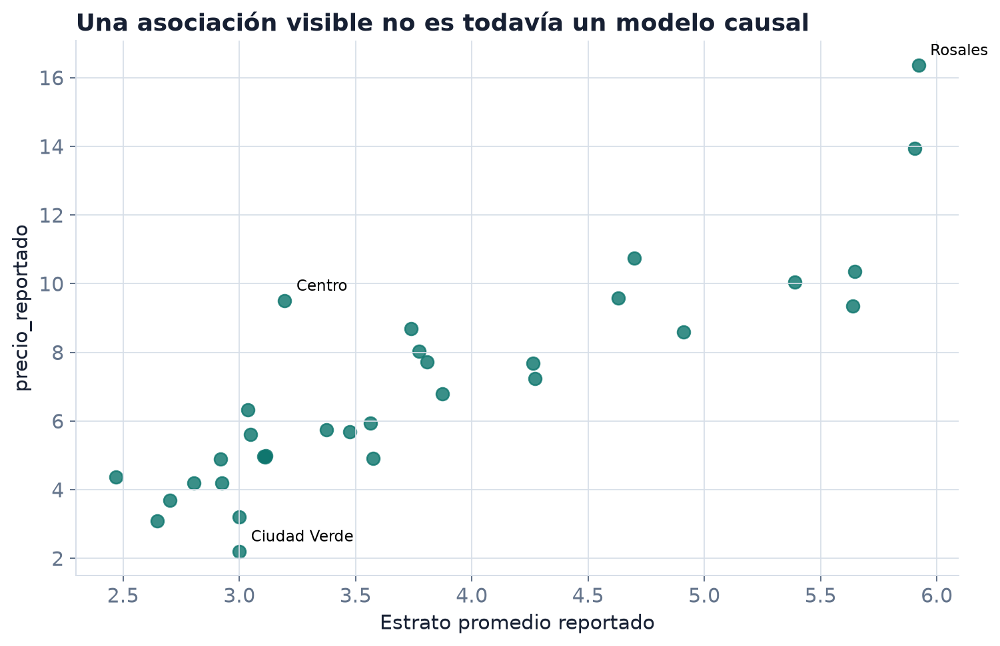
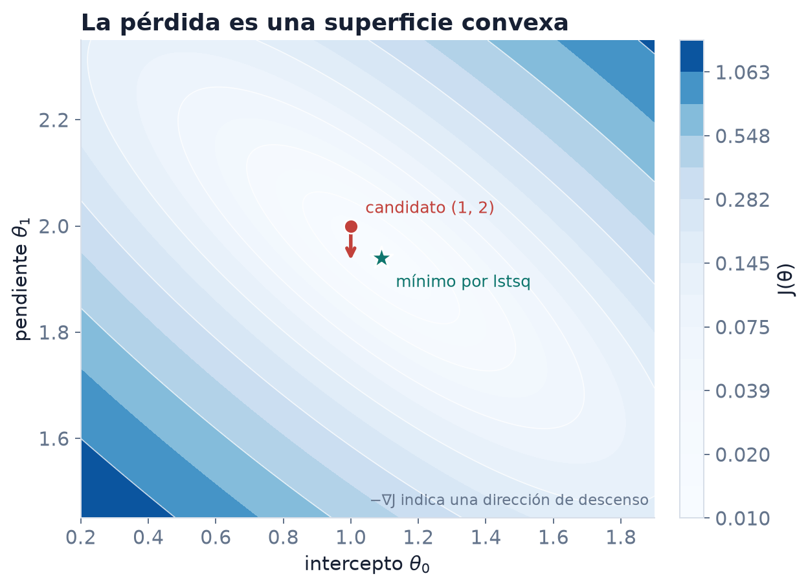
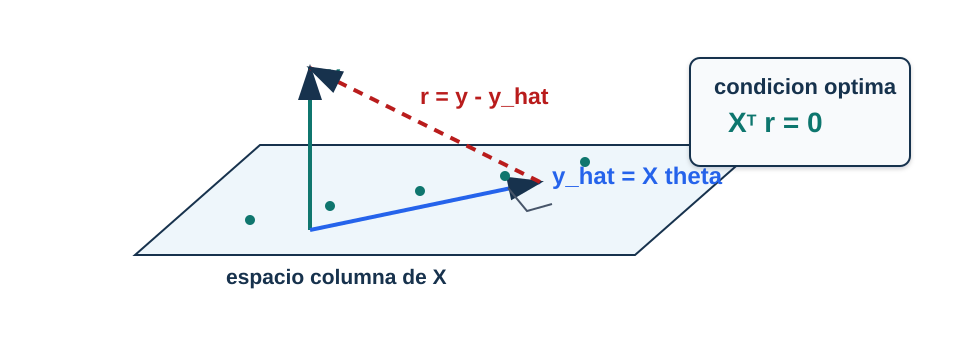

Regresión lineal: media condicional, riesgo y ecuaciones normales
Queremos estimar un número a partir de varias características observadas y entender qué sistema matemático determina el mejor ajuste cuadrático.
Hoy llegaremos desde una tabla hasta
\[ \mathbf X^\top\mathbf X\widehat{\boldsymbol\theta} =\mathbf X^\top\mathbf y. \]
La solución numérica queda para la segunda clase.

Fuente: Secretaría Distrital del Hábitat de Bogotá. Datos agregados por subzona; la unidad de precio_reportado no está documentada en el archivo fuente.
La gráfica sugiere una asociación positiva entre estrato_promedio y precio_reportado.
No establece que:
Hoy formularemos una regla predictiva, no una intervención.
Para cada subzona \(i\):
| Símbolo | Lectura |
|---|---|
| \(x_{i1}\) | estrato promedio |
| \(x_{i2}\) | área promedio |
| \(x_{i3}\) | alcobas promedio |
| \(x_{i4}\) | baños promedio |
| \(x_{i5}\) | parqueaderos promedio |
| \(y_i\) | precio reportado |
Bajo pérdida cuadrática, la mejor predicción posible entre todas las funciones medibles es
\[ f_P^*(\boldsymbol x)=\mathbb E_P[Y\mid\boldsymbol X=\boldsymbol x]. \]
La regresión lineal restringe la búsqueda a \(f_{\boldsymbol\theta}(\boldsymbol x)=\boldsymbol x^\top\boldsymbol\theta\) y define
\[ \boldsymbol\theta_P\in\arg\min_{\boldsymbol\theta} R_P(\boldsymbol\theta),\qquad R_P(\boldsymbol\theta) =\frac12\mathbb E_P[(Y-\boldsymbol X^\top\boldsymbol\theta)^2]. \]
Con una muestra \(\mathsf D_n=((\boldsymbol x_1,y_1),\ldots,(\boldsymbol x_n,y_n))\) calculamos
\[ \widehat R_n(\boldsymbol\theta) =\frac1{2n}\sum_{i=1}^n (y_i-\boldsymbol x_i^\top\boldsymbol\theta)^2, \qquad \widehat{\boldsymbol\theta} =\arg\min_{\boldsymbol\theta}\widehat R_n(\boldsymbol\theta). \]
El MSE que reportaremos como métrica no incluye el factor \(1/2\): \(\operatorname{MSE}_n=2\widehat R_n\).
¿Cuál objeto cambia si recolectamos otra muestra: \(\boldsymbol\theta_P\) o \(\widehat{\boldsymbol\theta}\)?
Las ecuaciones normales caracterizan el minimizador empírico, no eliminan la distancia entre \(\widehat R_n\) y \(R_P\).
\[ \widehat y_i=\theta_0+\theta_1x_i \]
La recta no afirma que todas las observaciones caigan sobre ella. Produce una predicción y deja un residual para cada fila.
Con varias variables cambia la dimensión, no la idea.
\[ \widehat y_i =\theta_0+\theta_1x_{i1}+\cdots+\theta_{p-1}x_{i,p-1} =\boldsymbol x_i^\top\boldsymbol\theta \]
Usaremos \(p\) para el número de columnas de la matriz de diseño, incluida la columna del intercepto.
| subzona | 1 | estrato | área | alcobas | baños | parqueaderos |
|---|---|---|---|---|---|---|
| Rosales | 1 | 5.922 | 177.316 | 2.673 | 3.776 | 2.981 |
| Chicó | 1 | 5.905 | 128.044 | 2.225 | 3.105 | 2.152 |
| Centro | 1 | 3.195 | 63.383 | 1.744 | 1.799 | 0.988 |
La primera columna no fue medida: codifica el intercepto.
\[ \mathbf X= \begin{bmatrix} \color{#b73535}{1}&\color{#b73535}{5.922}&\color{#b73535}{177.316}&\color{#b73535}{2.673}&\color{#b73535}{3.776}&\color{#b73535}{2.981}\\ \color{#245bbf}{1}&\color{#245bbf}{5.905}&\color{#245bbf}{128.044}&\color{#245bbf}{2.225}&\color{#245bbf}{3.105}&\color{#245bbf}{2.152}\\ \color{#287a4b}{1}&\color{#287a4b}{3.195}&\color{#287a4b}{63.383}&\color{#287a4b}{1.744}&\color{#287a4b}{1.799}&\color{#287a4b}{0.988}\\ \vdots&\vdots&\vdots&\vdots&\vdots&\vdots \end{bmatrix} \in\mathbb R^{32\times 6} \]
Los colores conservan la identidad de Rosales, Chicó y Centro al pasar de tabla a matriz.
En una implementación manual:
En LinearRegression, fit_intercept=True lo maneja internamente. No debemos agregar unos y dejar simultáneamente que la biblioteca ajuste otro intercepto.
\[ \mathbf X\in\mathbb R^{n\times p},\qquad \boldsymbol\theta\in\mathbb R^p,\qquad \mathbf y\in\mathbb R^n \]
Entonces
\[ \mathbf X\boldsymbol\theta\in\mathbb R^n. \]
El modelo produce exactamente una predicción por observación.
1 · voto individual 2 · discusión en parejas 3 · segundo voto
La columna del intercepto lleva el diseño a \(320\times11\). El gradiente tiene una componente por parámetro, de modo que pertenece a \(\mathbb R^{11}\).
\[ \underbrace{ \begin{bmatrix} \color{#b73535}{\boldsymbol x_1^\top}\\ \color{#245bbf}{\boldsymbol x_2^\top}\\ \color{#287a4b}{\boldsymbol x_3^\top}\\ \vdots\\\boldsymbol x_n^\top \end{bmatrix}}_{\mathbf X} \boldsymbol\theta = \underbrace{ \begin{bmatrix} \color{#b73535}{\widehat y_1}\\ \color{#245bbf}{\widehat y_2}\\ \color{#287a4b}{\widehat y_3}\\ \vdots\\\widehat y_n \end{bmatrix}}_{\widehat{\mathbf y}} \]
Cada fila conserva su correspondencia: \(\widehat y_i=\boldsymbol x_i^\top\boldsymbol\theta\). No necesitamos un bucle para expresar ni calcular las predicciones.
Tomemos
\[ \mathbf x=(0,1,2,3)^\top,\qquad \mathbf y=(1.1,2.9,5.2,6.8)^\top. \]
Con intercepto,
\[ \mathbf X= \begin{bmatrix} 1&0\\1&1\\1&2\\1&3 \end{bmatrix}. \]
Si \(\boldsymbol\theta=(1,2)^\top\), entonces
\[ \mathbf X\boldsymbol\theta=(1,3,5,7)^\top. \]
El producto matricial convierte una hipótesis sobre intercepto y pendiente en cuatro predicciones verificables.
En este curso usaremos siempre
\[ \mathbf r(\boldsymbol\theta) =\mathbf y-\mathbf X\boldsymbol\theta =\mathbf y-\widehat{\mathbf y}. \]
| \(x_i\) | \(y_i\) | \(\widehat y_i\) | \(r_i=y_i-\widehat y_i\) |
|---|---|---|---|
| 0 | 1.1 | 1.0 | 0.1 |
| 1 | 2.9 | 3.0 | -0.1 |
| 2 | 5.2 | 5.0 | 0.2 |
| 3 | 6.8 | 7.0 | -0.2 |
La suma de residuales puede ser cero aunque ninguno de los errores sea cero.
Para comparar parámetros necesitamos resumir el vector residual. Usaremos la suma de cuadrados:
\[ \lVert\mathbf r(\boldsymbol\theta)\rVert_2^2 =\sum_{i=1}^n (y_i-\boldsymbol x_i^\top\boldsymbol\theta)^2. \]
El cuadrado evita cancelaciones de signo y da más peso a errores grandes.
\[ \widehat R_n(\boldsymbol\theta) =\frac{1}{2n}\lVert\mathbf X\boldsymbol\theta-\mathbf y\rVert_2^2. \]
Para el candidato \(\boldsymbol\theta=(1,2)^\top\):
\[ \widehat R_n(1,2) =\frac{0.1^2+(-0.1)^2+0.2^2+(-0.2)^2}{8}=0.0125. \]

| Factor | Efecto |
|---|---|
| \(1/n\) | convierte la suma en un promedio |
| \(1/2\) | cancela el 2 que aparece al derivar |
Ninguno cambia el minimizador mientras sea una constante positiva. Sí cambia el valor numérico de la pérdida y del gradiente.
Escribimos la norma como producto interno:
\[ \widehat R_n(\boldsymbol\theta) =\frac{1}{2n} (\mathbf X\boldsymbol\theta-\mathbf y)^\top (\mathbf X\boldsymbol\theta-\mathbf y). \]
Antes de expandir: el término entre paréntesis está en \(\mathbb R^n\), por tanto el producto es escalar.
\[ (\mathbf X\boldsymbol\theta-\mathbf y)^\top (\mathbf X\boldsymbol\theta-\mathbf y) \]
\[ =\boldsymbol\theta^\top\mathbf X^\top\mathbf X\boldsymbol\theta -\boldsymbol\theta^\top\mathbf X^\top\mathbf y -\mathbf y^\top\mathbf X\boldsymbol\theta +\mathbf y^\top\mathbf y. \]
Los dos términos cruzados son el mismo escalar.
Como
\[ \boldsymbol\theta^\top\mathbf X^\top\mathbf y =(\boldsymbol\theta^\top\mathbf X^\top\mathbf y)^\top =\mathbf y^\top\mathbf X\boldsymbol\theta, \]
obtenemos
\[ \widehat R_n(\boldsymbol\theta)=\frac{1}{2n} \left( \boldsymbol\theta^\top\mathbf X^\top\mathbf X\boldsymbol\theta -2\mathbf y^\top\mathbf X\boldsymbol\theta +\mathbf y^\top\mathbf y \right). \]
La matriz \(\mathbf X^\top\mathbf X\) es simétrica, de modo que
\[ \nabla_{\boldsymbol\theta} (\boldsymbol\theta^\top\mathbf X^\top\mathbf X\boldsymbol\theta) =2\mathbf X^\top\mathbf X\boldsymbol\theta. \]
Además,
\[ \nabla_{\boldsymbol\theta} (\mathbf y^\top\mathbf X\boldsymbol\theta)=\mathbf X^\top\mathbf y, \qquad \nabla_{\boldsymbol\theta}(\mathbf y^\top\mathbf y)=\mathbf0. \]
\[ \nabla\widehat R_n(\boldsymbol\theta) =\frac{1}{n} \left(\mathbf X^\top\mathbf X\boldsymbol\theta-\mathbf X^\top\mathbf y\right) =\frac{1}{n}\mathbf X^\top (\mathbf X\boldsymbol\theta-\mathbf y). \]
Con nuestra convención \(\mathbf r=\mathbf y-\mathbf X\boldsymbol\theta\), también
\[ \nabla\widehat R_n(\boldsymbol\theta) =-\frac{1}{n}\mathbf X^\top\mathbf r. \]
\[ \underbrace{\mathbf X^\top}_{p\times n} \underbrace{(\mathbf X\boldsymbol\theta-\mathbf y)}_{n} = \underbrace{\nabla\widehat R_n(\boldsymbol\theta)}_{p}. \]
El gradiente tiene una componente por parámetro. Un resultado de forma \(n\) no podría indicar cómo mover \(p\) coeficientes.
Para el candidato \(\boldsymbol\theta=(1,2)^\top\), el gradiente es \((0,0.075)^\top\).
Tiempo: 6 minutos.
En un mínimo de esta función convexa,
\[ \nabla\widehat R_n(\widehat{\boldsymbol\theta})=\mathbf0. \]
Por tanto,
\[ \mathbf X^\top (\mathbf X\widehat{\boldsymbol\theta}-\mathbf y)=\mathbf0. \]
Reordenando la condición anterior:
\[ \mathbf X^\top\mathbf X\widehat{\boldsymbol\theta} =\mathbf X^\top\mathbf y. \]
Estas son las ecuaciones normales. Caracterizan los minimizadores de mínimos cuadrados incluso cuando no conviene formar \(\mathbf X^\top\mathbf X\) en el computador.

La predicción \(\widehat{\mathbf y}=\mathbf X\widehat{\boldsymbol\theta}\) pertenece al espacio generado por las columnas de \(\mathbf X\).
Como \(\mathbf r=\mathbf y-\mathbf X\widehat{\boldsymbol\theta}\), la condición de primer orden equivale a
\[ \mathbf X^\top\mathbf r=\mathbf0. \]
Cada columna de \(\mathbf X\) tiene producto interno cero con el residual. Con intercepto, una consecuencia es \(\sum_i r_i=0\) sobre los datos de ajuste.
Siempre existe al menos un minimizador de mínimos cuadrados.
La solución en parámetros es única si
\[ \operatorname{rank}(\mathbf X)=p. \]
Si las columnas son linealmente dependientes, distintas elecciones de \(\boldsymbol\theta\) pueden producir la misma proyección \(\mathbf X\boldsymbol\theta\).
Rango y condicionamiento no son la misma pregunta.
Derivamos
\[ \mathbf X^\top\mathbf X\widehat{\boldsymbol\theta} =\mathbf X^\top\mathbf y. \]
Compararemos inversa, solve, lstsq y LinearRegression, y mediremos condicionamiento.
Una caracterización algebraica no prescribe automáticamente la implementación más estable.
La regresión lineal múltiple se construye con cuatro objetos:
matriz de diseño \(\mathbf X\)
predicción \(\mathbf X\boldsymbol\theta\)
residual \(\mathbf r=\mathbf y-\mathbf X\boldsymbol\theta\)
condición \(\mathbf X^\top\mathbf r=\mathbf0\)
En la próxima clase verificaremos cada igualdad con código.